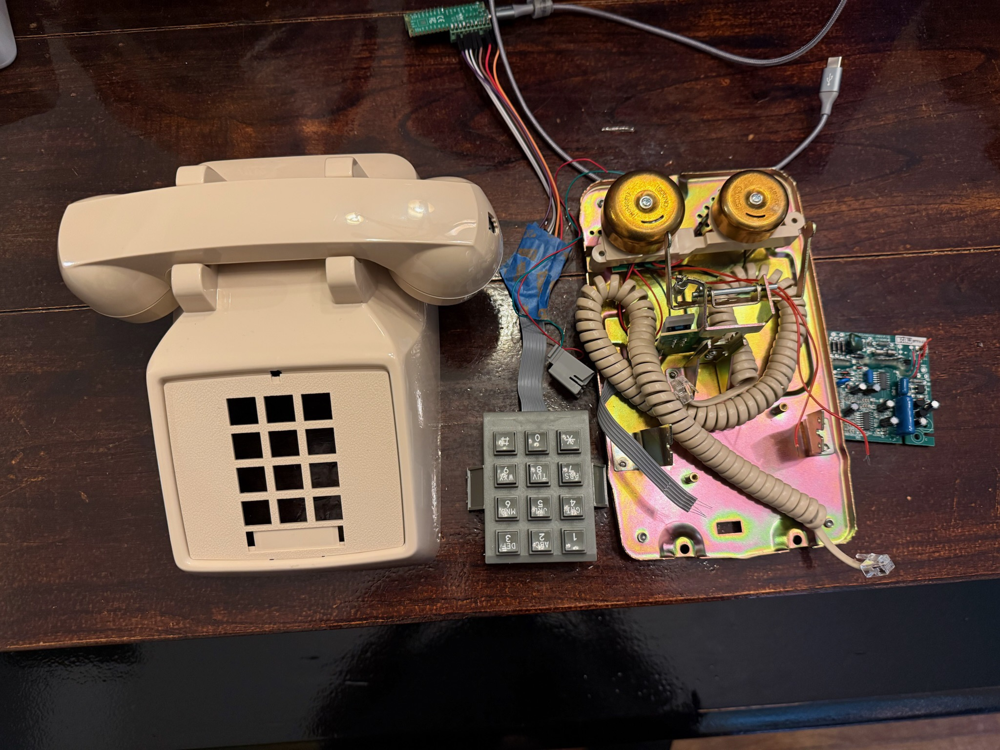
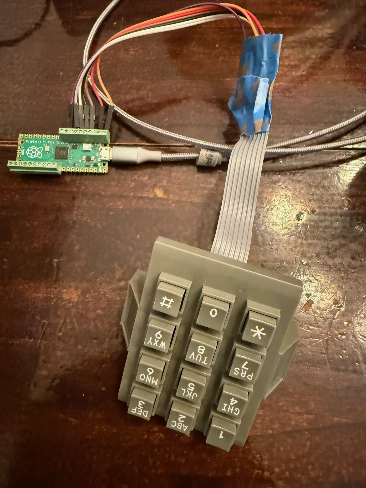

It started with a request from the amazing team at O, Miami — they wanted to create a custom phone shaped like a banana that would play poems about bananas, along with other special poems selected based on the number you dialed. The phone would live at Peel, a banana-based soft serve shop in Miami Shores and the Design District that rescues "ugly" bananas that stores won't sell. A banana phone playing poetry in a banana soft serve shop. I was in.
Pick up the handset, hear a dial tone, punch in a number, listen to a poem. No screens, no apps.
I found John Park's project where he built a phone that played songs with an Adafruit Feather, and that got me started on the electronics side. I went with a Raspberry Pi Pico running MicroPython, a DFPlayer Mini for audio, and a salvaged phone handset. But first I needed to figure out the keypad.
The Phone Keypad Problem
John Park's project used a standard 3x4 membrane keypad with a well-documented pinout. My phone's keypad? Not so much. It was a salvaged unit from a real telephone, and the wiring was completely different from what I expected.
A typical phone keypad is a 3x4 matrix, 3 columns and 4 rows, giving you 12 keys with just 7 wires. The columns are outputs and the rows are inputs. To scan it, you pull one column LOW at a time, then read the rows to see which key is pressed:
Col 0 Col 1 Col 2
Row 0: 1 2 3
Row 1: 4 5 6
Row 2: 7 8 9
Row 3: * 0 #Simple enough in theory. But which wire is which?
Brute-Force Pin Discovery

With no datasheet and no markings, I wrote a script called keypad_probe.py that brute-forced every possible pin pair on the Pico. The idea: try every combination of two GPIO pins. Set one as output (LOW) and the other as input (pull-up), then wait for a keypress. When a key connects a row to a column, the input pin gets pulled LOW.
# The brute-force approach: try every pin pair
for pin_a in range(28):
for pin_b in range(28):
if pin_a == pin_b:
continue
# Set pin_a as output LOW, pin_b as input with pull-up
# Press a key, see if pin_b goes LOW
# If it does, we found a connection!I pressed each key one at a time and logged which pin pairs responded. After working through all 12 keys, a pattern emerged:
| Key | Pin A (Column) | Pin B (Row) |
|---|---|---|
| 1 | GP0 | GP6 |
| 2 | GP1 | GP6 |
| 3 | GP2 | GP6 |
| 4 | GP0 | GP5 |
| 5 | GP1 | GP5 |
| 6 | GP2 | GP5 |
| 7 | GP0 | GP4 |
| 8 | GP1 | GP4 |
| 9 | GP2 | GP4 |
| * | GP0 | GP3 |
| 0 | GP1 | GP3 |
| # | GP2 | GP3 |
Three columns on GP0, GP1, GP2. Four rows on GP6, GP5, GP4, GP3. The column pins were straightforward, but the row ordering was reversed compared to what I expected. GP6 is the top row (1-2-3) and GP3 is the bottom row (*-0-#).
The Bottom Row Problem
With the matrix mapped out, I wired it up and wrote a basic scanning loop. Keys 1 through 9 worked great on the first try. Then I pressed 0.
0
00
000Three zeroes from a single press. The bottom row (GP3: *, 0, #) was incredibly noisy. Every press registered multiple times, and ghost presses would fire randomly.
My first debounce approach, waiting for a single clean read, wasn't even close to enough. The bottom row needed something much more aggressive.
Getting Debounce Right
After a lot of experimentation, I landed on a two-stage debounce:
Stage 1: Key detection. Require 5 consecutive identical reads before accepting a keypress. This filters out the brief noise spikes that cause false triggers.
def get_key():
count = 0
last = None
while True:
hit = raw_scan()
if hit is not None and hit == last:
count += 1
if count >= 5:
return KEYMAP[hit[0]][hit[1]]
else:
count = 1 if hit is not None else 0
last = hit
sleep_ms(10)Stage 2: Key release. Wait for 5 clean reads (no key detected) plus a 30ms cooldown before accepting the next key. This prevents the bouncy release from registering as a second press.
def wait_release():
clean = 0
while clean < 5:
hit = raw_scan()
if hit is None:
clean += 1
else:
clean = 0
sleep_ms(5)
sleep_ms(30)The numbers took some tuning. Too aggressive and the keypad feels sluggish. You're dialing a phone number and people expect keys to respond instantly. Too loose and the bottom row double-fires. The current values feel natural: fast enough for quick dialing, stable enough that every press registers exactly once.
The Final Wiring
Here's how the keypad connects to the Pico:
Pico GPIO Keypad Function
--------- ---------------
GP6 Column 0 (1, 4, 7, *) ← Output
GP5 Column 1 (2, 5, 8, 0) ← Output
GP7 Column 2 (3, 6, 9, #) ← Output
GP4 Row 0 (1, 2, 3) ← Input (pull-up)
GP2 Row 1 (4, 5, 6) ← Input (pull-up)
GP1 Row 2 (7, 8, 9) ← Input (pull-up)
GP0 Row 3 (*, 0, #) ← Input (pull-up)The scanning works by pulling each column LOW one at a time, then reading the four row pins. If a key is pressed on that column, the corresponding row will read LOW (pulled down through the key switch). The Pico's internal pull-up resistors keep the row pins HIGH when no key is pressed. No external components needed.
What I Learned
- Don't assume standard pinouts. Salvaged phone keypads can be wired any way the manufacturer felt like. Brute-force discovery is your friend.
- Debounce is not optional. Especially on real mechanical switches. The bottom row of this keypad generates significantly more noise than the other rows, possibly due to longer trace lengths or wear on the contacts.
- Test with the actual hardware. The keypad worked perfectly in simulation. The real one had bounce characteristics that no simulator would have predicted.
Keypad done. Next up was getting the DFPlayer Mini to play poems through the earpiece, which turned out to be its own adventure. Part 2.
The Journey
- Part 1: Cracking the keypad matrix
- Part 2: Wiring the DFPlayer Mini
- Part 3: Kid-proofing and Easter eggs
- Part 4: Making it a banana